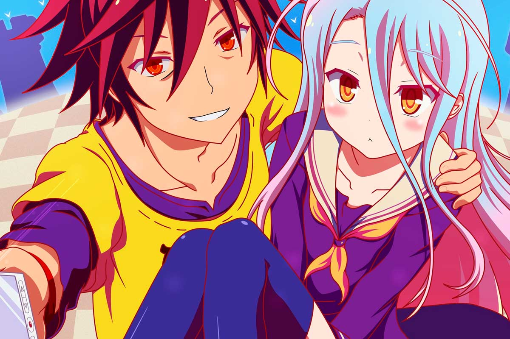

ISEKAI
Etimologia
es un subgénero de fantasía japonesa, y una temática típica de las novelas ligeras, manga y anime que giran en torno a un personaje o un grupo de personajes de la Tierra que de manera intencional o accidental termina en un universo paralelo, un mundo de fantasía, en otro planeta o en el mismo mundo pero en un tiempo distinto, donde deben adaptarse y/o asimilarse a este nuevo mundo, junto con sus nuevas reglas, culturas y filosofías. El isekai puede incluir elementos de ciencia ficción y el término generalmente se refiere a obras de ficción japonesas. El subgénero y la temática tiene similitudes con los viajes accidentales y las historias occidentales de fantasía de portales en la literatura para adultos jóvenes.
Caracteristicas
Este tipo de trama puede dividirse en dos tipos: isekai ten'i (異世界転移 «transición a otro mundo?) e isekai tensei (異世界転生 «reencarnación en otro mundo»?).1 El primer ejemplo, en donde el protagonista termina teletransportado a otro mundo (por ejemplo: viajando, siendo invocado o tomando la posesión de otro ser),1 era más común en las primeras obras. Mientras que el segundo ejemplo, donde el protagonista muere en su mundo original y se reencarna en otro mundo o habita el otro cuerpo ya existente en el otro mundo, se ha vuelto más común en los lanzamientos recientes.
El nuevo mundo podría ser un mundo nuevo literal, como un planeta alternativo o una realidad fantástica; un mundo nuevo para el protagonista, como un escenario histórico del mundo real; o un nuevo mundo ficticio, como el protagonista que se despierta en un libro, una película o un videojuego.
Un argumento muy común es que el protagonista de un isekai suele ser un individuo común, usualmente estudiante o un asalariado japonés, que está familiarizado con los aspectos generales del mundo de fantasía al que es enviado ya que comparte grandes similitudes con textos audiovisuales que el sujeto conoce y domina (mangas, juegos, series, etc.). Sin embargo, en muchas otras historias, la trama se aleja de estos conceptos y el personaje se encuentra en mundos desconocidos donde debe aprender desde cero por su cuenta las normas de convivencia básicas de la sociedad y el uso de habilidades o elementos fantásticos de ese mundo; por lo general, en el nuevo mundo son capaces de tener éxito gracias al uso de sus habilidades o conocimientos que conservan de este mundo.
Animes Famosos
Konosuba (2016)
Re:Zero (2012)
Kobayashi-San: No Maid Dragon (2013)
No Game, No Life (2014)
Youjo Senki (2017)
Kazuma Satō es un hikikomori que vive en un sector rural de Japón. Un día, decidido ir a comprar lo antes posible un videojuego, sale de casa y de regreso observa a una chica que sería atropellada por un camión y hace lo impensable para él, salvándola, y muriendo de forma heroica.
Todo se desarrollará después de que Subaru y sus amigos derrotasen a la bestia demoníaca Wolgarm, fuente de la maldición, y salvasen a los niños de la aldea Irlam. Los protagonistas finalmente tienen un momento de paz, aunque Subaru va a cierta misión secreta que no debe dejar que nadie más descubra.
Cuando una promesa durante unas cuantas bebidas de más termina con tu casa llena de dragones humanoides… La nueva realidad de la señorita Kobayashi es esta, cuando Tohru se aparece en su vida. La chica es un dragón, pero también trabaja como ama de casa para la señorita Kobayashi, y no puede negar que la compañía es muy agradable, al igual que su ayuda. Pero cuando un par de dragones más aparecen en su puerta buscando a Tohru, su hogar parece un cuento de hadas.
Sora y Shiro son hermanos, y son reconocidos en el mundo de los videojuegos por ser una entidad invencible llamada "Blank". Para ellos, el mundo real es otro juego, pero al recibir un correo electrónico que los reta a un juego virtual de ajedrez, sus vidas cambian drásticamente. Los hermanos son transportados a un reino misterioso donde conocen a Tet, el Dios de los Juegos.
Tanya Degurechaff es una soldada infame reconocida por su crueldad y su habilidad táctica. Debajo de su cabello rubio, baja estatura y aspecto de niña, se encuentra el alma de un hombre que desafió a Ser X, un Dios autoproclamado, ganándose el castigo de la reencarnación con semejante apariencia en un mundo desconocido.